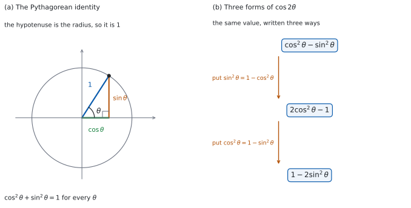

SL 3.6 — Trigonometric identities（三角比の恒等式）
- Pythagorean identity（ピタゴラスの恒等式）\(\cos^{2}\theta + \sin^{2}\theta = 1\) を使える。
- \(\sin\theta\) から \(\cos\theta\) を（またはその逆を）、象限で符号を決めて求められる。
- 角を求めずに \(\tan\theta\) を出せる。
- double angle identities（\(2\) 倍角の公式）\(\sin 2\theta\)、\(\cos 2\theta\) を使える。
- \(\cos 2\theta\) の \(3\) つの形を、場面に応じて使い分けられる。
The idea
1. ピタゴラスの恒等式
単位円の上の点は \((\cos\theta,\ \sin\theta)\) で、円の式は \(x^{2}+y^{2}=1\) でした（SL 3.5a）。そのまま代入すると
\[ \cos^{2}\theta + \sin^{2}\theta = 1 \tag{1}\]
になります。図 1 の (a) を見てください。
公式集の 3.6 の欄に Pythagorean identity として印刷されています。
\(\cos^2\theta + \sin^2\theta = 1\)
これは identity（恒等式）です。どんな \(\theta\) でも成り立つ、という意味で、解くべき方程式ではありません。
書き方の約束です。 \(\cos^{2}\theta\) は \((\cos\theta)^{2}\) のことです。\(\cos(\theta^{2})\) ではありません。
2. 片方から片方を出す
式 1 を移項すると
\[ \cos^{2}\theta = 1 - \sin^{2}\theta, \qquad \sin^{2}\theta = 1 - \cos^{2}\theta \tag{2}\]
です。ここから \(\cos\theta\) を出すには平方根を取りますが、\(\pm\) のどちらかは、象限を見て決めます（SL 3.5a）。
たとえば \(\sin\theta = \dfrac{2}{3}\) で \(\theta\) が鋭角なら、\(\cos\theta\) は正なので
\[ \cos\theta = \sqrt{1 - \frac{4}{9}} = \sqrt{\frac{5}{9}} = \frac{\sqrt{5}}{3} \]
です。\(\theta\) が第 \(2\) 象限なら、同じ計算で \(\cos\theta = -\dfrac{\sqrt{5}}{3}\) になります。
\(\cos\theta = \pm\sqrt{1-\sin^{2}\theta}\) のままでは、答えになりません。問題文はふつう象限や範囲を与えますので、それがあれば \(1\) つに決めてください。与えられていないときは、\(2\) つとも書きます。
ただし、\(2\) 乗だけで決まる量（あとで出てくる \(\cos 2\theta = 1 - 2\sin^{2}\theta\) など）は、象限がなくても \(1\) つに決まります。
3. 角を求めずに \(\tan\theta\) を出す
\(\tan\theta = \dfrac{\sin\theta}{\cos\theta}\) でした（SL 3.5a）。だから \(\sin\theta\) と \(\cos\theta\) がそろえば、\(\theta\) そのものを求めなくても \(\tan\theta\) が出ます。
さきほどの例（\(\sin\theta = \dfrac{2}{3}\)、\(\theta\) は鋭角）なら
\[ \tan\theta = \frac{\frac{2}{3}}{\frac{\sqrt{5}}{3}} = \frac{2}{\sqrt{5}} = \frac{2\sqrt{5}}{5} \]
です。\(\theta\) を電卓で出してから \(\tan\) を取ると、正確な値でなくなります。 Paper 1 では特に、この道すじで進みます。
4. \(2\) 倍角：\(\sin 2\theta\)
\[ \sin 2\theta = 2\sin\theta\cos\theta \tag{3}\]
公式集の 3.6 の欄に Double angle identities の \(1\) つとして印刷されています。
\(\sin 2\theta = 2\sin\theta\cos\theta\)
\(\sin 2\theta\) は \(2\sin\theta\) ではありません。 \(\sin\) は「かっこの中身に働く」もので、外に出せません。
さきほどの例なら
\[ \sin 2\theta = 2 \times \frac{2}{3} \times \frac{\sqrt{5}}{3} = \frac{4\sqrt{5}}{9} \]
です。
5. \(2\) 倍角：\(\cos 2\theta\) の \(3\) つの形
\[ \cos 2\theta = \cos^{2}\theta - \sin^{2}\theta = 2\cos^{2}\theta - 1 = 1 - 2\sin^{2}\theta \tag{4}\]
公式集の 3.6 の欄に、\(3\) つの形がまとめて印刷されています。
\(\cos 2\theta = \cos^2\theta - \sin^2\theta = 2\cos^2\theta - 1 = 1 - 2\sin^2\theta\)
\(3\) つは同じ値の書きかえです。式 2 を入れるだけで移り合います。図 1 の (b) にその道すじを描いてあります。
さきほどの例なら、\(\sin\theta\) だけを使う形が早いです。
\[ \cos 2\theta = 1 - 2 \times \frac{4}{9} = \frac{1}{9} \]
6. どの形を選ぶか
表 1 のように選ぶと、計算が短くなります。
| 分かっているもの | \(\cos 2\theta\) に使う形 |
|---|---|
| \(\sin\theta\) だけ | \(1 - 2\sin^{2}\theta\) |
| \(\cos\theta\) だけ | \(2\cos^{2}\theta - 1\) |
| 両方 | どれでも（\(\cos^{2}\theta - \sin^{2}\theta\) が短い） |
\(1 - 2\sin^{2}\theta\) と \(2\cos^{2}\theta - 1\) は、\(1\) の位置と符号が逆です。 混ざりやすいところなので、\(\theta = \dfrac{\pi}{6}\) を入れて確かめる習慣をつけてください。\(\cos\dfrac{\pi}{3} = \dfrac{1}{2}\) で、\(1 - 2\left(\dfrac{1}{2}\right)^{2} = \dfrac{1}{2}\)、\(2\left(\dfrac{\sqrt{3}}{2}\right)^{2} - 1 = \dfrac{1}{2}\) です。\(1\) の位置や符号を取りちがえた形は \(-\dfrac{1}{2}\) を返すので、その場で分かります。\(\theta = 0\) でも、この符号のまちがいは見つかります。 正しい \(2\) つの形はどちらも \(1\) を返しますが、\(2\sin^{2}\theta - 1\) や \(1 - 2\cos^{2}\theta\) は \(-1\) を返すからです。
ただし、\(1\) 点の代入は恒等式の証明ではありません。 合わなければ確実にまちがいですが、合っても「まだまちがいが見つかっていない」だけです。誤りを見つけるための検算だと思ってください。
7. 恒等式の使いどころ
- 値を出す。 片方の比から、残りの比や \(2\) 倍角を出します。
- 式を書きかえる。 同じ式を、扱いやすい形にします。式 4 を移項すると、\(\sin^{2}\theta\) や \(\cos^{2}\theta\) を \(\cos 2\theta\) の \(1\) 次式に書きかえられます（例題 4）。\(2\) 乗を \(1\) 次に落とせるのが利点です。
- 使える角を確かめる。 書きかえた式に \(\tan\) や分数が出てきたら、分母が \(0\) になる角がないかを見ます。
自分が出した値を電卓に入れて確かめます。\(\sin\theta\) と \(\cos\theta\) の値を小数で入れ、\((\sin\theta)^{2}+(\cos\theta)^{2}\) を計算します。\(1\) から離れたら、どちらかの値がまちがっているか、途中で丸めすぎています。
\(\theta\) そのものを入れて \(\cos^{2}\theta+\sin^{2}\theta\) を計算しても、確かめにはなりません。 恒等式なので、どんな \(\theta\) でも \(1\) が返ります。\(\sin 2\theta\) を確かめたいときは、\(\theta\) を出してから \(\sin(2\theta)\) を直接計算し、自分の \(2\sin\theta\cos\theta\) の値とくらべます。
Angle の設定は Radian にしておきます（SL 3.4）。
Paper 1 は電卓がないので、この確かめ方はできません。 このページの例題と演習は、すべて手で解ける形にしてあります。正確な値を求める問題は電卓では答えが出せないので、恒等式は Paper 1 の道具です。

Why it works
なぜ、ピタゴラスの恒等式が成り立つのでしょうか。 単位円の上の点 \(P\) から \(x\) 軸に垂線を下ろすと、直角三角形ができます。横の辺の長さは \(|\cos\theta|\)、縦の辺は \(|\sin\theta|\)、斜辺は半径なので \(1\) です。
ピタゴラスの定理から
\[ |\cos\theta|^{2} + |\sin\theta|^{2} = 1^{2} \]
で、\(2\) 乗すると絶対値は消えます。だから 式 1 です。\(P\) が軸の上にあるときは三角形がつぶれますが、そのときも座標が \((\pm 1,\ 0)\) か \((0,\ \pm 1)\) なので、式はそのまま成り立ちます。どんな \(\theta\) でも成り立つのは、このためです。
\(2\) 倍角の式そのものは、公式集に印刷されているところから出発します。 導き方は SL の範囲外なので、ここでは「\(3\) つの形がなぜ同じものか」を見ます。
なぜ、\(\cos 2\theta\) に \(3\) つの形があるのでしょうか。 \(1\) つ目の形 \(\cos^{2}\theta - \sin^{2}\theta\) を出発点にします。ここに 式 2 を入れます。
\(\sin^{2}\theta = 1 - \cos^{2}\theta\) を入れると
\[ \cos^{2}\theta - (1 - \cos^{2}\theta) = 2\cos^{2}\theta - 1 \]
です。代わりに \(\cos^{2}\theta = 1 - \sin^{2}\theta\) を入れると
\[ (1 - \sin^{2}\theta) - \sin^{2}\theta = 1 - 2\sin^{2}\theta \]
です。\(3\) つは別々の公式ではなく、同じ式の書きかえです。だからどれを使っても同じ値になります。
なぜ、\(\theta\) を求めずに \(\tan\theta\) が出せるのでしょうか。 \(\tan\theta\) の定義が \(\dfrac{\sin\theta}{\cos\theta}\) という比だからです。比を作るのに必要なのは \(2\) つの値だけで、角そのものは要りません。
これは実用上も大事です。\(\sin\theta = \dfrac{2}{3}\) のような値では、\(\theta\) は正確な値になりません。途中で \(\theta\) を通ると、そこで正確さが失われます。
Worked examples
問題文は英語です。意味が理解できなかったら、問題文の下の「日本語訳」を開いてください。解説は日本語です。
例題も演習も、すべて電卓なしで解けます。 Paper 1 のつもりで解いてください。
例題 1 It is given that \(\sin\theta = \dfrac{3}{5}\), where \(\theta\) is acute.
(a) Find the exact value of \(\cos\theta\).
(b) Find the exact value of \(\tan\theta\).
(c) Find the exact value of \(\sin 2\theta\).
(d) Explain why the sign of \(\cos\theta\) is determined by the information given.
日本語訳
\(\sin\theta = \dfrac{3}{5}\) で、\(\theta\) は鋭角です。
(a) \(\cos\theta\) の正確な値を求めなさい。
(b) \(\tan\theta\) の正確な値を求めなさい。
(c) \(\sin 2\theta\) の正確な値を求めなさい。
(d) 与えられた条件から \(\cos\theta\) の符号が決まる理由を説明しなさい。
(a) 式 2 に入れます。\(\theta\) が鋭角なので \(\cos\theta\) は正です。
\[ \cos^{2}\theta = 1 - \frac{9}{25} = \frac{16}{25} \ \Rightarrow \ \cos\theta = \frac{4}{5} \]
(b) 比を取ります（第 3 節）。
\[ \tan\theta = \frac{\frac{3}{5}}{\frac{4}{5}} = \frac{3}{4} \]
(c) 式 3 です。
\[ \sin 2\theta = 2 \times \frac{3}{5} \times \frac{4}{5} = \frac{24}{25} \]
(d) Explain why なので、英語で理由を書きます。
試験ではこう書く
The identity gives \(\cos^{2}\theta = \dfrac{16}{25}\), so \(\cos\theta = \pm\dfrac{4}{5}\). Because \(\theta\) is acute, the point on the unit circle at angle \(\theta\) lies in the first quadrant, where the \(x\)-coordinate is positive. Since \(\cos\theta\) is that \(x\)-coordinate, the negative value is rejected and \(\cos\theta = \dfrac{4}{5}\).
（恒等式から \(\cos^{2}\theta = \dfrac{16}{25}\) となり、\(\cos\theta = \pm\dfrac{4}{5}\) である。\(\theta\) が鋭角なので、角 \(\theta\) にある単位円上の点は第 \(1\) 象限にあり、\(x\) 座標は正である。\(\cos\theta\) はその \(x\) 座標なので、負のほうは捨てられて \(\cos\theta = \dfrac{4}{5}\) である、という意味です。）
検算（(a) について）。 \(3\)-\(4\)-\(5\) の直角三角形で見ます。 \(\sin\theta = \dfrac{3}{5}\) は「対辺 \(3\)、斜辺 \(5\)」の形です。残りの辺は \(\sqrt{25-9} = 4\) で、\(\cos\theta = \dfrac{4}{5}\) ✓ 恒等式を通らない道すじでも同じです。
検算（(b) について）。 もとに戻します。 \(\tan\theta = \dfrac{3}{4}\) なら、対辺 \(3\)、隣辺 \(4\)、斜辺 \(5\) です。\(\sin\theta = \dfrac{3}{5}\) にもどりました ✓
検算（(c) について）。 大きさで見ます。 \(\sin 2\theta = \dfrac{24}{25} = 0.96\) で、\(1\) 以下です ✓ また \(\sin\theta = 0.6\) より大きいので、\(2\theta\) は \(\theta\) より \(\dfrac{\pi}{2}\) に近いことになります。\(\theta \approx 37°\)、\(2\theta \approx 74°\) なので、筋が通っています。
(a) \(\cos^{2}\theta = 1 - \dfrac{9}{25} = \dfrac{16}{25}\), and \(\theta\) acute \[\cos\theta = \frac{4}{5}\]
(b) \(\tan\theta = \dfrac{\frac{3}{5}}{\frac{4}{5}}\) \[\tan\theta = \frac{3}{4}\]
(c) \(\sin 2\theta = 2\left(\dfrac{3}{5}\right)\left(\dfrac{4}{5}\right)\) \[\sin 2\theta = \frac{24}{25}\]
(d) \(\cos\theta = \pm\dfrac{4}{5}\), and \(\theta\) acute puts the point in the first quadrant, where the \(x\)-coordinate is positive.
例題 2 It is given that \(\cos x = \dfrac{3}{4}\), where \(x\) is acute.
(a) Find the exact value of \(\sin x\).
(b) Find the exact value of \(\sin 2x\).
(c) Find the exact value of \(\cos 2x\).
(d) Explain why \(2x\) is also acute.
日本語訳
\(\cos x = \dfrac{3}{4}\) で、\(x\) は鋭角です。
(a) \(\sin x\) の正確な値を求めなさい。
(b) \(\sin 2x\) の正確な値を求めなさい。
(c) \(\cos 2x\) の正確な値を求めなさい。
(d) \(2x\) も鋭角である理由を説明しなさい。
(a) \(x\) が鋭角なので \(\sin x\) は正です。
\[ \sin^{2}x = 1 - \frac{9}{16} = \frac{7}{16} \ \Rightarrow \ \sin x = \frac{\sqrt{7}}{4} \]
(b) 式 3 です。
\[ \sin 2x = 2 \times \frac{\sqrt{7}}{4} \times \frac{3}{4} = \frac{3\sqrt{7}}{8} \]
(c) \(\cos x\) だけを使う形を選びます（表 1）。
\[ \cos 2x = 2 \times \frac{9}{16} - 1 = \frac{9}{8} - 1 = \frac{1}{8} \]
(d) Explain why なので、英語で理由を書きます。
試験ではこう書く
Since \(x\) is acute, \(0 < x < \dfrac{\pi}{2}\), so \(0 < 2x < \pi\). From part (c), \(\cos 2x = \dfrac{1}{8}\), which is positive. On \(0 < 2x < \pi\) the cosine is positive only for \(0 < 2x < \dfrac{\pi}{2}\): on the unit circle the \(x\)-coordinate is \(0\) at \(2x = \dfrac{\pi}{2}\) and negative for \(\dfrac{\pi}{2} < 2x < \pi\). Hence \(2x\) is acute.
（\(x\) が鋭角なので \(0 < x < \dfrac{\pi}{2}\)、したがって \(0 < 2x < \pi\) である。(c) から \(\cos 2x = \dfrac{1}{8}\) で正である。\(0 < 2x < \pi\) では、余弦が正になるのは \(0 < 2x < \dfrac{\pi}{2}\) のときだけである。\(2x = \dfrac{\pi}{2}\) では \(x\) 座標が \(0\)、\(\dfrac{\pi}{2} < 2x < \pi\) では負だからである。よって \(2x\) は鋭角である、という意味です。）
検算（(a) について）。 \(2\) 乗の和で見ます。 \(\left(\dfrac{3}{4}\right)^{2}+\left(\dfrac{\sqrt{7}}{4}\right)^{2} = \dfrac{9}{16}+\dfrac{7}{16} = 1\) ✓
検算（(b) について）。 \(1\) 以下か見ます。 \(\sqrt{7} \approx 2.65\) なので \(\dfrac{3\sqrt{7}}{8} \approx 0.99\) です。\(1\) 以下で、しかも \(1\) に近い ✓ \(2x\) が \(\dfrac{\pi}{2}\) に近いことと合っています。
検算（(c) について）。 別の形で出し直します。 \(\cos^{2}x - \sin^{2}x = \dfrac{9}{16} - \dfrac{7}{16} = \dfrac{2}{16} = \dfrac{1}{8}\) ✓ \(3\) つの形は同じ値を返します。
(a) \(\sin^{2}x = 1 - \dfrac{9}{16} = \dfrac{7}{16}\), and \(x\) acute \[\sin x = \frac{\sqrt{7}}{4}\]
(b) \(\sin 2x = 2\left(\dfrac{\sqrt{7}}{4}\right)\left(\dfrac{3}{4}\right)\) \[\sin 2x = \frac{3\sqrt{7}}{8}\]
(c) \(\cos 2x = 2\left(\dfrac{3}{4}\right)^{2} - 1\) \[\cos 2x = \frac{1}{8}\]
(d) \(0 < 2x < \pi\) and \(\cos 2x > 0\), so \(2x\) is in the first quadrant.
例題 3 It is given that \(\sin\theta = -\dfrac{5}{13}\), where \(\theta\) lies in the third quadrant.
(a) Find the exact value of \(\cos\theta\).
(b) Find the exact value of \(\tan\theta\).
(c) Find the exact value of \(\sin 2\theta\).
(d) Find the exact value of \(\cos 2\theta\), and explain why \(2\theta\) lies in the first quadrant.
日本語訳
\(\sin\theta = -\dfrac{5}{13}\) で、\(\theta\) は第 \(3\) 象限にあります。
(a) \(\cos\theta\) の正確な値を求めなさい。
(b) \(\tan\theta\) の正確な値を求めなさい。
(c) \(\sin 2\theta\) の正確な値を求めなさい。
(d) \(\cos 2\theta\) の正確な値を求め、\(2\theta\) が第 \(1\) 象限にある理由を説明しなさい。
(a) 第 \(3\) 象限では \(\cos\theta\) は負です（SL 3.5a）。
\[ \cos^{2}\theta = 1 - \frac{25}{169} = \frac{144}{169} \ \Rightarrow \ \cos\theta = -\frac{12}{13} \]
(b) 比を取ります。負を負で割るので正です。
\[ \tan\theta = \frac{-\frac{5}{13}}{-\frac{12}{13}} = \frac{5}{12} \]
(c) 式 3 です。
\[ \sin 2\theta = 2 \times \left(-\frac{5}{13}\right) \times \left(-\frac{12}{13}\right) = \frac{120}{169} \]
(d) \(\sin\theta\) だけを使う形が早いです。
\[ \cos 2\theta = 1 - 2 \times \frac{25}{169} = 1 - \frac{50}{169} = \frac{119}{169} \]
explain why なので、英語で理由を書きます。
試験ではこう書く
From parts (c) and (d), \(\sin 2\theta = \dfrac{120}{169} > 0\) and \(\cos 2\theta = \dfrac{119}{169} > 0\). On the unit circle the point at angle \(2\theta\) has \(x\)-coordinate \(\cos 2\theta\) and \(y\)-coordinate \(\sin 2\theta\). Both coordinates are positive, and that happens only in the first quadrant, so \(2\theta\) lies in the first quadrant.
（(c) と (d) から \(\sin 2\theta = \dfrac{120}{169} > 0\)、\(\cos 2\theta = \dfrac{119}{169} > 0\) である。角 \(2\theta\) にある単位円上の点は、\(x\) 座標が \(\cos 2\theta\)、\(y\) 座標が \(\sin 2\theta\) である。どちらの座標も正になるのは第 \(1\) 象限だけなので、\(2\theta\) は第 \(1\) 象限にある、という意味です。）
検算（(a) について）。 \(5\)-\(12\)-\(13\) の直角三角形で見ます。 \(5^{2}+12^{2} = 25+144 = 169 = 13^{2}\) ✓ 大きさは \(\dfrac{12}{13}\) で、符号を象限から付けました。
検算（(c) について）。 符号で見ます。 第 \(3\) 象限では \(\sin\theta\) も \(\cos\theta\) も負なので、その積は正です。\(\sin 2\theta > 0\) ✓
検算（(d) について）。 別の形で出し直します。 \(\cos^{2}\theta - \sin^{2}\theta = \dfrac{144}{169} - \dfrac{25}{169} = \dfrac{119}{169}\) ✓ また \(\left(\dfrac{120}{169}\right)^{2}+\left(\dfrac{119}{169}\right)^{2} = \dfrac{14400+14161}{28561} = 1\) で、単位円の上の点になっています ✓
(a) \(\cos^{2}\theta = \dfrac{144}{169}\), third quadrant so negative \[\cos\theta = -\frac{12}{13}\]
(b) \(\tan\theta = \dfrac{-\frac{5}{13}}{-\frac{12}{13}}\) \[\tan\theta = \frac{5}{12}\]
(c) \(\sin 2\theta = 2\left(-\dfrac{5}{13}\right)\left(-\dfrac{12}{13}\right)\) \[\sin 2\theta = \frac{120}{169}\]
(d) \(\cos 2\theta = 1 - 2\left(\dfrac{5}{13}\right)^{2}\) \[\cos 2\theta = \frac{119}{169}\]
Both \(\sin 2\theta\) and \(\cos 2\theta\) are positive, so \(2\theta\) is in the first quadrant.
例題 4 (a) Show that \(\dfrac{1 - \cos 2\theta}{2} = \sin^{2}\theta\).
(b) Hence find the exact value of \(\sin^{2}\dfrac{\pi}{8}\).
(c) Show that \(\dfrac{\sin 2\theta}{1 + \cos 2\theta} = \tan\theta\), where \(\cos\theta \neq 0\).
(d) Explain why the identity in part (c) cannot be used when \(\theta = \dfrac{\pi}{2}\).
日本語訳
(a) \(\dfrac{1 - \cos 2\theta}{2} = \sin^{2}\theta\) を示しなさい。
(b) これをもとに \(\sin^{2}\dfrac{\pi}{8}\) の正確な値を求めなさい。
(c) \(\cos\theta \neq 0\) のとき \(\dfrac{\sin 2\theta}{1 + \cos 2\theta} = \tan\theta\) を示しなさい。
(d) \(\theta = \dfrac{\pi}{2}\) のとき (c) の等式が使えない理由を説明しなさい。
(a) Show that なので、つなぐ過程を書きます。 式 4 の \(3\) つ目の形を使います。
\[ \frac{1 - \cos 2\theta}{2} = \frac{1 - (1 - 2\sin^{2}\theta)}{2} = \frac{2\sin^{2}\theta}{2} = \sin^{2}\theta \]
(b) \(\theta = \dfrac{\pi}{8}\) とすると \(2\theta = \dfrac{\pi}{4}\) で、表の値が使えます（SL 3.5b）。
\[ \sin^{2}\frac{\pi}{8} = \frac{1 - \cos\frac{\pi}{4}}{2} = \frac{1 - \frac{\sqrt{2}}{2}}{2} = \frac{2 - \sqrt{2}}{4} \]
(c) 分子は 式 3、分母は \(2\cos^{2}\theta - 1\) の形を使います。
\[ 1 + \cos 2\theta = 1 + (2\cos^{2}\theta - 1) = 2\cos^{2}\theta \]
\[ \frac{\sin 2\theta}{1 + \cos 2\theta} = \frac{2\sin\theta\cos\theta}{2\cos^{2}\theta} = \frac{\sin\theta}{\cos\theta} = \tan\theta \]
\(\cos\theta \neq 0\) なので、約分してよいことに注意します。
(d) Explain why なので、英語で理由を書きます。
試験ではこう書く
At \(\theta = \dfrac{\pi}{2}\) we have \(\cos\theta = 0\), so \(\tan\theta\) is not defined. The left-hand side fails as well: \(\cos 2\theta = \cos\pi = -1\), so the denominator \(1 + \cos 2\theta\) is \(0\). Both sides are undefined, so the identity cannot be used at this angle.
（\(\theta = \dfrac{\pi}{2}\) では \(\cos\theta = 0\) なので \(\tan\theta\) が定まらない。左辺も同じで、\(\cos 2\theta = \cos\pi = -1\) だから分母 \(1 + \cos 2\theta\) が \(0\) になる。両辺とも定まらないので、この角では使えない、という意味です。）
検算（(a) について）。 数でためします。 \(\theta = \dfrac{\pi}{6}\) とすると、左辺は \(\dfrac{1 - \frac{1}{2}}{2} = \dfrac{1}{4}\)、右辺は \(\left(\dfrac{1}{2}\right)^{2} = \dfrac{1}{4}\) ✓
検算（(b) について）。 大きさで見ます。 \(\sqrt{2} \approx 1.41\) なので \(\dfrac{2-\sqrt{2}}{4} \approx 0.146\) です。\(\dfrac{\pi}{8}\) は \(\dfrac{\pi}{6}\) より小さいので、\(\sin^{2}\) は \(\left(\dfrac{1}{2}\right)^{2} = 0.25\) より小さいはずです ✓
検算（(c) について）。 数でためします。 \(\theta = \dfrac{\pi}{4}\) とすると、左辺は \(\dfrac{\sin\frac{\pi}{2}}{1+\cos\frac{\pi}{2}} = \dfrac{1}{1+0} = 1\)、右辺は \(\tan\dfrac{\pi}{4} = 1\) ✓
(a) \(\cos 2\theta = 1 - 2\sin^{2}\theta\) \[\frac{1 - (1 - 2\sin^{2}\theta)}{2} = \sin^{2}\theta\]
(b) with \(\theta = \dfrac{\pi}{8}\), \(\cos 2\theta = \cos\dfrac{\pi}{4} = \dfrac{\sqrt{2}}{2}\) \[\sin^{2}\frac{\pi}{8} = \frac{2 - \sqrt{2}}{4}\]
(c) \(1 + \cos 2\theta = 2\cos^{2}\theta\), and \(\cos\theta \neq 0\), so \[\frac{2\sin\theta\cos\theta}{2\cos^{2}\theta} = \frac{\sin\theta}{\cos\theta} = \tan\theta\]
(d) \(\cos\dfrac{\pi}{2} = 0\), so \(\tan\theta\) is undefined and \(1 + \cos\pi = 0\) makes the denominator zero.
Common errors
\(\sin\) は外に出せません（第 4 節）。正しくは \(2\sin\theta\cos\theta\) です。
\(\cos^{2}\theta\) は \((\cos\theta)^{2}\) です（第 1 節）。
\(1 - 2\sin^{2}\theta\) と \(2\cos^{2}\theta - 1\) です（式 4）。\(\theta = \dfrac{\pi}{6}\) を入れると、どちらも \(\dfrac{1}{2}\) になるはずです。
「acute」「in the third quadrant」などは、符号を決めるための条件です（第 2 節）。
Paper 1 では電卓がありませんし、Paper 2 でも正確な値でなくなります（第 3 節）。
\(\cos\theta = 0\) の角では \(\tan\theta\) が定まりません（第 7 節）。
Exercises
各問題に、折りたたみが \(3\) つ付いています。日本語訳、解答例（答案用紙に書くべきこと。英語です）、解説（なぜそうなるか。日本語です）。
まず自分で解いて、次に解答例と見くらべてください。解説は、合わなかったときだけ開けば十分です。
1 It is given that \(\sin\theta = \dfrac{4}{5}\), where \(\theta\) is acute. Find the exact value of \(\cos\theta\).
日本語訳
\(\sin\theta = \dfrac{4}{5}\) で、\(\theta\) は鋭角です。\(\cos\theta\) の正確な値を求めなさい。
\[\cos^{2}\theta = 1 - \frac{16}{25} = \frac{9}{25}\]
\(\theta\) acute, so
\[\cos\theta = \frac{3}{5}\]
2 It is given that \(\cos\theta = -\dfrac{8}{17}\), where \(\theta\) lies in the second quadrant. Find the exact value of \(\sin\theta\).
日本語訳
\(\cos\theta = -\dfrac{8}{17}\) で、\(\theta\) は第 \(2\) 象限にあります。\(\sin\theta\) の正確な値を求めなさい。
\[\sin^{2}\theta = 1 - \frac{64}{289} = \frac{225}{289}\]
second quadrant, so
\[\sin\theta = \frac{15}{17}\]
第 \(2\) 象限では \(\sin\theta\) が正です（SL 3.5a）。\(\cos\theta\) が負でも、\(2\) 乗すれば符号は消えます。
検算。 \(8\)-\(15\)-\(17\) の直角三角形で見ます。 \(64+225 = 289 = 17^{2}\) ✓
\(-\dfrac{15}{17}\) としないでください。 負になるのは第 \(3\)・第 \(4\) 象限です。
3 It is given that \(\sin\theta = \dfrac{1}{3}\).
(a) Given also that \(\theta\) is acute, find the exact value of \(\tan\theta\).
(b) If no quadrant is given, find the possible values of \(\tan\theta\).
日本語訳
\(\sin\theta = \dfrac{1}{3}\) です。
(a) さらに \(\theta\) が鋭角のとき、\(\tan\theta\) の正確な値を求めなさい。
(b) 象限が与えられていないとき、\(\tan\theta\) として考えられる値を求めなさい。
(a) \(\theta\) acute, so
\[\cos\theta = \sqrt{1 - \frac{1}{9}} = \frac{2\sqrt{2}}{3}\]
\[\tan\theta = \frac{\frac{1}{3}}{\frac{2\sqrt{2}}{3}} = \frac{\sqrt{2}}{4}\]
(b) \(\cos\theta = \pm\dfrac{2\sqrt{2}}{3}\), so
\[\tan\theta = \pm\frac{\sqrt{2}}{4}\]
\(\theta\) を求めずに、比だけで出します（第 3 節）。\(\dfrac{1}{2\sqrt{2}}\) を有理化すると \(\dfrac{\sqrt{2}}{4}\) です。
- では象限が決まらないので、\(\cos\theta\) の符号が \(2\) とおりあります（第 2 節）。\(\sin\theta\) が正なので \(\theta\) は第 \(1\) 象限か第 \(2\) 象限で、第 \(1\) 象限なら \(\tan\theta\) は正、第 \(2\) 象限なら負です。大きさは同じです。
検算。 もとに戻します。 対辺 \(1\)、隣辺 \(2\sqrt{2}\) なら斜辺は \(\sqrt{1+8} = 3\) で、\(\sin\theta = \dfrac{1}{3}\) にもどります ✓
検算（(b) について）。 符号の表で見ます。 第 \(2\) 象限では \(\tan\theta\) が負でした（SL 3.5a）。\(-\dfrac{\sqrt{2}}{4}\) と符号が合っています ✓
\(\theta\) を電卓で出さないでください。 正確な値でなくなります。
4 It is given that \(\cos\theta = \dfrac{7}{25}\), where \(\theta\) is acute. Find the exact value of \(\sin 2\theta\).
日本語訳
\(\cos\theta = \dfrac{7}{25}\) で、\(\theta\) は鋭角です。\(\sin 2\theta\) の正確な値を求めなさい。
\[\sin\theta = \sqrt{1 - \frac{49}{625}} = \frac{24}{25}\]
\[\sin 2\theta = 2\left(\frac{24}{25}\right)\left(\frac{7}{25}\right) = \frac{336}{625}\]
まず \(\sin\theta\) を出してから、式 3 に入れます。
検算。 \(7\)-\(24\)-\(25\) の直角三角形で見ます。 \(49+576 = 625 = 25^{2}\) ✓ また \(\dfrac{336}{625} \approx 0.54\) で \(1\) 以下です ✓
\(2\sin\theta\) としないでください。 \(\cos\theta\) をかけ忘れています。
5 It is given that \(\sin\theta = \dfrac{1}{4}\). Find the exact value of \(\cos 2\theta\).
日本語訳
\(\sin\theta = \dfrac{1}{4}\) です。\(\cos 2\theta\) の正確な値を求めなさい。
\[\cos 2\theta = 1 - 2\left(\frac{1}{4}\right)^{2} = 1 - \frac{1}{8}\]
\[\cos 2\theta = \frac{7}{8}\]
\(\sin\theta\) だけを使う形を選びます（表 1）。この形なら象限が分からなくても答えが出ます。 \(\sin\theta\) が \(2\) 乗で入るからです。
検算。 もう \(1\) つの形でも出します。 \(\cos^{2}\theta = 1 - \dfrac{1}{16} = \dfrac{15}{16}\) なので \(\cos^{2}\theta - \sin^{2}\theta = \dfrac{15}{16} - \dfrac{1}{16} = \dfrac{14}{16} = \dfrac{7}{8}\) ✓ 符号を決めずにすみました。
検算（大きさで）。 \(\sin\theta = 0.25\) は小さいので、\(\theta\) も \(2\theta\) も \(0\) に近く、\(\cos 2\theta\) は \(1\) に近いはずです。\(\dfrac{7}{8} = 0.875\) ✓
象限を探さないでください。 この問題では要りません。
6 It is given that \(\cos\theta = -\dfrac{1}{3}\). Find the exact value of \(\cos 2\theta\).
日本語訳
\(\cos\theta = -\dfrac{1}{3}\) です。\(\cos 2\theta\) の正確な値を求めなさい。
\[\cos 2\theta = 2\left(-\frac{1}{3}\right)^{2} - 1 = \frac{2}{9} - 1\]
\[\cos 2\theta = -\frac{7}{9}\]
\(\cos\theta\) だけを使う形です（表 1）。\(2\) 乗するので、負号は消えます。
検算。 \(\sin\) の形でも出します。 \(\sin^{2}\theta = 1 - \dfrac{1}{9} = \dfrac{8}{9}\) なので \(1 - 2 \times \dfrac{8}{9} = 1 - \dfrac{16}{9} = -\dfrac{7}{9}\) ✓
\(-1\) を忘れないでください。 \(\dfrac{2}{9}\) で止めると別の値です。
7 Show that \(\dfrac{\sin 2\theta}{2\sin\theta} = \cos\theta\), where \(\sin\theta \neq 0\).
日本語訳
\(\sin\theta \neq 0\) のとき \(\dfrac{\sin 2\theta}{2\sin\theta} = \cos\theta\) を示しなさい。
\[\frac{\sin 2\theta}{2\sin\theta} = \frac{2\sin\theta\cos\theta}{2\sin\theta}\]
\(\sin\theta \neq 0\), so
\[\frac{\sin 2\theta}{2\sin\theta} = \cos\theta\]
Show that なので、分子を書きかえて約分する過程を書きます（式 3）。
検算。 数でためします。 \(\theta = \dfrac{\pi}{6}\) とすると、左辺は \(\dfrac{\sin\frac{\pi}{3}}{2\sin\frac{\pi}{6}} = \dfrac{\frac{\sqrt{3}}{2}}{1} = \dfrac{\sqrt{3}}{2}\)、右辺は \(\cos\dfrac{\pi}{6} = \dfrac{\sqrt{3}}{2}\) ✓
\(\sin\theta \neq 0\) を書き落とさないでください。 約分の条件です。
8 It is given that \(\sin\theta = k\), where \(-1 < k < 1\). Explain why \(\cos 2\theta\) can be found from \(k\) alone, but \(\cos\theta\) cannot.
日本語訳
\(\sin\theta = k\)（\(-1 < k < 1\)）とします。\(\cos 2\theta\) は \(k\) だけから求められるのに、\(\cos\theta\) はそうできない理由を説明しなさい。
\(\cos 2\theta = 1 - 2k^{2}\) uses only \(k^{2}\), but \(\cos\theta = \pm\sqrt{1 - k^{2}}\) is non-zero and needs the quadrant to fix the sign.
Explain why なので、\(2\) 乗が入るかどうかを根拠として書きます（式 4、式 2）。
検算。 \(2\) つの角でためします。 \(\sin\theta = \dfrac{1}{2}\) のとき、\(\theta = \dfrac{\pi}{6}\) なら \(\cos\theta = \dfrac{\sqrt{3}}{2}\)、\(\theta = \dfrac{5\pi}{6}\) なら \(\cos\theta = -\dfrac{\sqrt{3}}{2}\) でちがいます。ところが \(\cos 2\theta\) はどちらも \(1 - 2 \times \dfrac{1}{4} = \dfrac{1}{2}\) で同じです ✓
試験ではこう書く
The identity \(\cos 2\theta = 1 - 2\sin^{2}\theta\) involves \(\sin\theta\) only through \(\sin^{2}\theta\), and squaring removes the sign, so the value of \(\sin\theta\) alone determines \(\cos 2\theta\). By contrast \(\cos^{2}\theta = 1 - \sin^{2}\theta\) gives \(\cos\theta = \pm\sqrt{1 - \sin^{2}\theta}\), and for \(-1 < \sin\theta < 1\) the two signs occur for different quadrants with the same \(\sin\theta\). So \(\cos\theta\) needs the quadrant as well.
9 Find the exact value of \(\cos^{2}\dfrac{\pi}{12} - \sin^{2}\dfrac{\pi}{12}\).
日本語訳
\(\cos^{2}\dfrac{\pi}{12} - \sin^{2}\dfrac{\pi}{12}\) の正確な値を求めなさい。
\[\cos^{2}\frac{\pi}{12} - \sin^{2}\frac{\pi}{12} = \cos\left(2 \times \frac{\pi}{12}\right) = \cos\frac{\pi}{6}\]
\[\frac{\sqrt{3}}{2}\]
式 4 を右から左に読みます。\(\cos^{2} - \sin^{2}\) の形を見たら、\(2\) 倍角にまとめられます。
検算。 大きさで見ます。 \(\dfrac{\pi}{12} = 15°\) は小さいので、\(\cos^{2}\) が \(1\) に近く \(\sin^{2}\) は \(0\) に近くなります。差は \(1\) より少し小さいはずで、\(\dfrac{\sqrt{3}}{2} \approx 0.87\) ✓
\(\dfrac{\pi}{12}\) の値を別々に出そうとしないでください。 表にありません。
10 It is given that \(\sin\theta = \dfrac{15}{17}\), where \(\theta\) is acute. A student writes \(\sin 2\theta = 2\sin\theta = \dfrac{30}{17}\). Identify the error, and find the exact value of \(\sin 2\theta\).
日本語訳
\(\sin\theta = \dfrac{15}{17}\) で、\(\theta\) は鋭角です。ある生徒が \(\sin 2\theta = 2\sin\theta = \dfrac{30}{17}\) と書きました。誤りを指摘し、\(\sin 2\theta\) の正確な値を求めなさい。
The student has treated \(\sin\) as if it could be taken outside; the identity is \(\sin 2\theta = 2\sin\theta\cos\theta\).
\[\cos\theta = \frac{8}{17}, \qquad \sin 2\theta = 2\left(\frac{15}{17}\right)\left(\frac{8}{17}\right) = \frac{240}{289}\]
Identify the error なので、どこが違うのかを名指ししてから、正しい答えを書きます（第 4 節）。
検算。 範囲で見ます。 生徒の値 \(\dfrac{30}{17} \approx 1.76\) は \(1\) を超えていて、\(\sin\) の値になりえません。この時点でまちがいと分かります ✓ 正しい値 \(\dfrac{240}{289} \approx 0.83\) は \(1\) 以下です。
\(8\)-\(15\)-\(17\) の直角三角形から \(\cos\theta = \dfrac{8}{17}\) が出ます（\(225+64 = 289\)）。
試験ではこう書く
The error is treating \(\sin 2\theta\) as \(2\sin\theta\): the sine of a doubled angle is not double the sine, and the correct identity is \(\sin 2\theta = 2\sin\theta\cos\theta\). The student’s value \(\dfrac{30}{17}\) is greater than \(1\), which is impossible for a sine. Since \(\theta\) is acute, \(\cos\theta = \sqrt{1 - \dfrac{225}{289}} = \dfrac{8}{17}\), so \(\sin 2\theta = 2\left(\dfrac{15}{17}\right)\left(\dfrac{8}{17}\right) = \dfrac{240}{289}\).